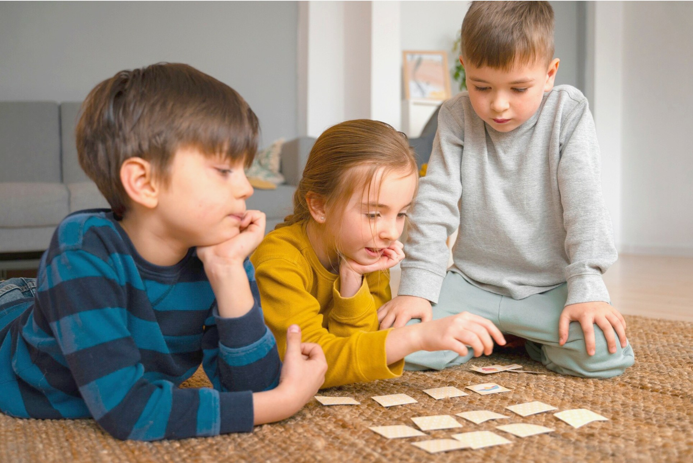
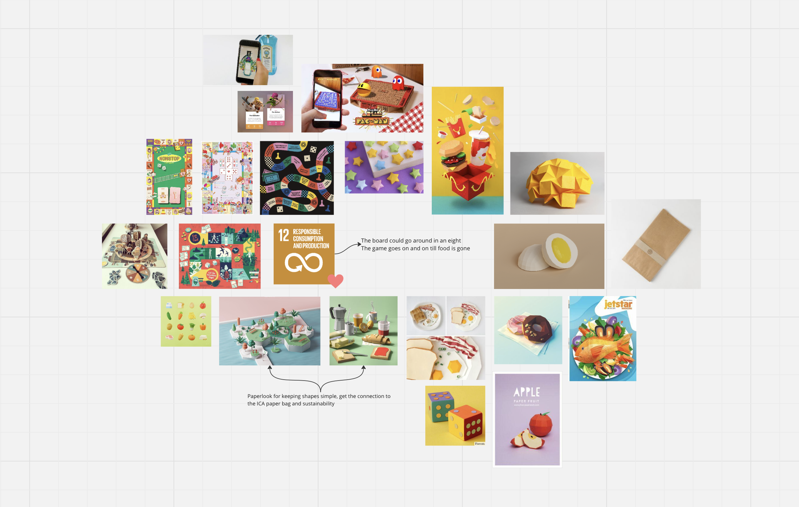
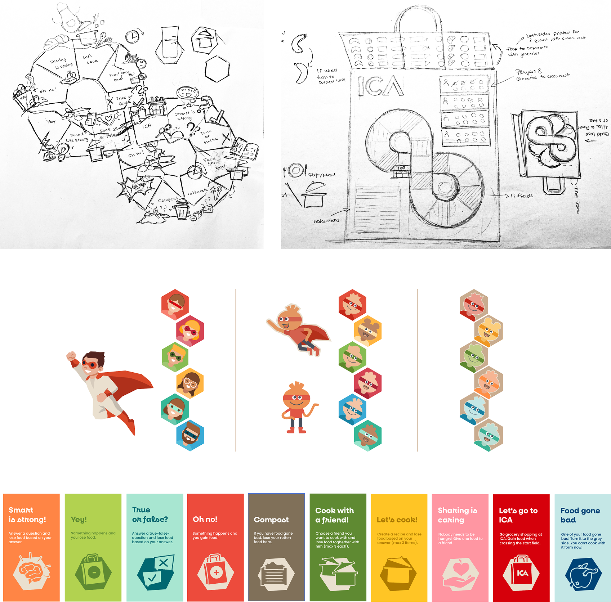
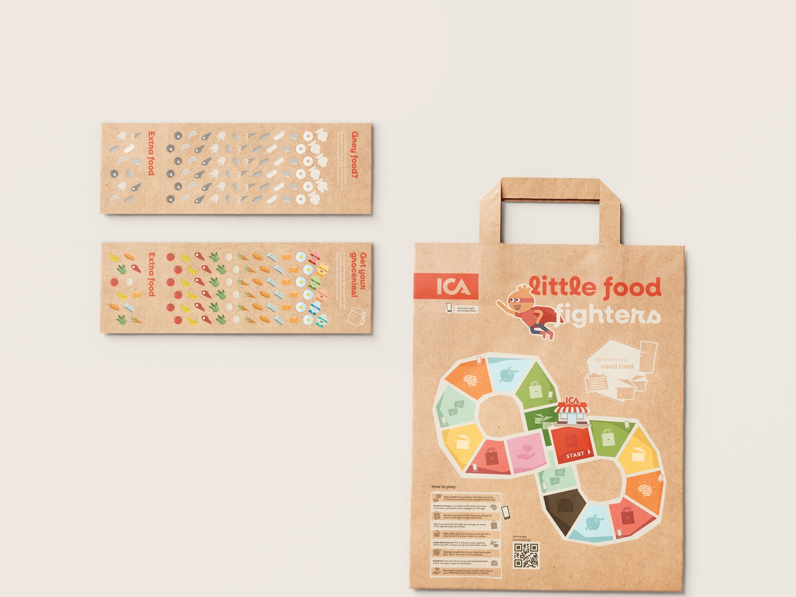
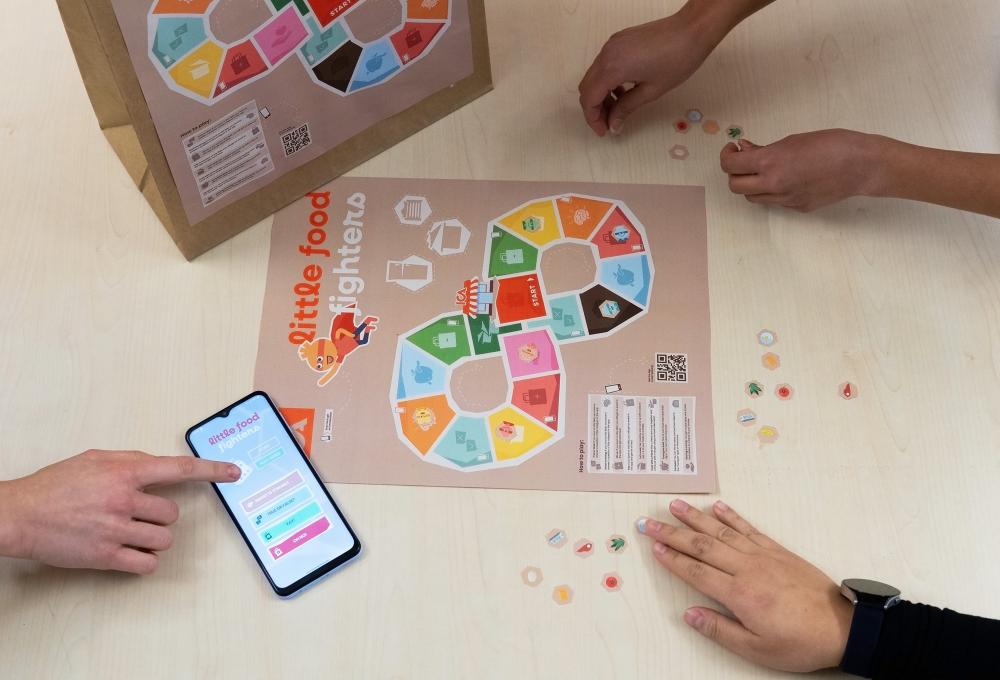
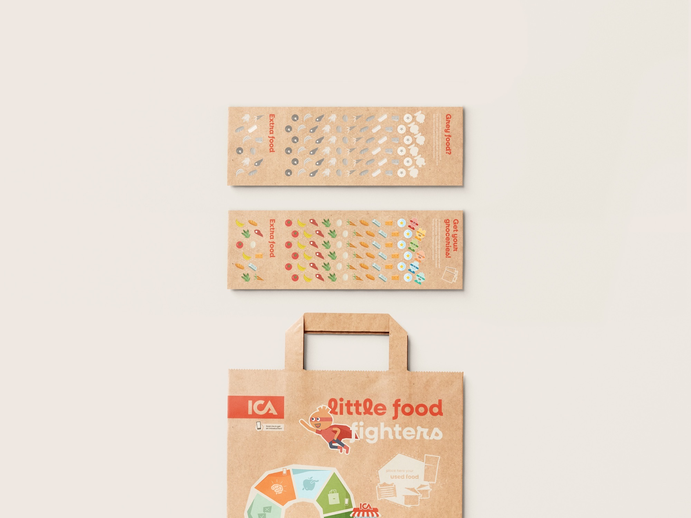
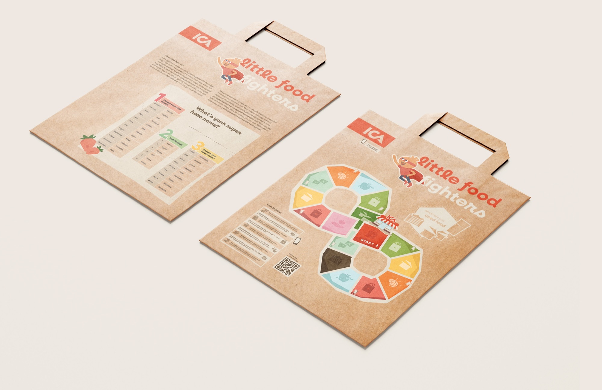

Little Food Fighters is a printed board game educating kids about food waste, coming directly with the grocery bag and extended with an AR companion app.

One third of all food produced globally is wasted, and changing that starts at home. The challenge was to design a sustainability intervention for families that did not feel like a lecture, reaching kids through play. Crucially, the game itself should not require any resources beyond what already exists.

We studied the everyday situations where food waste actually happens at home, and looked at how existing games tackle sustainability and what makes them engaging for kids. Most interventions target adults; games that worked for younger audiences relied on concrete tasks, cause-and-effect, and collaboration.

We identified the everyday moments where kids can actually help avoid food waste and built the game around those. We also explored how to keep the format itself sustainable, using only what already exists. Core mechanics: cooperative play, shared tasks including donating food to players in need, and a grocery bag format that puts the game directly in families' hands. Sustainability is not explained, it is played.

While teammates handled app development and task design, my focus was on character design, print layout, and the AR animation concept and visuals. Food characters were illustrated as colorful, gender and skin-tone neutral figures. The print layout was designed for standard ICA grocery bag packaging. The AR companion app brings characters to life when scanned.

The game was playtested with kids aged 7 to 10 from our personal circle. Observations focused on engagement, rule clarity, and whether the sustainability message landed naturally. The AR feature generated immediate excitement and became a strong motivator for repeat play.
Little Food Fighters is a cooperative board game where players rescue expiring food from the waste bin. It arrives printed on a grocery bag, no extra purchase or materials needed, meeting families at the moment food decisions are made. The project was met with enthusiasm by faculty, who saw SDG 12 addressed in a concrete and age-appropriate way. The concept was well received to the point where instructors expressed wanting to see it available in actual supermarkets.



Voteasy Votecounter

Langenscheidt Language Coach

ELLA – Lifelong Learning with AI